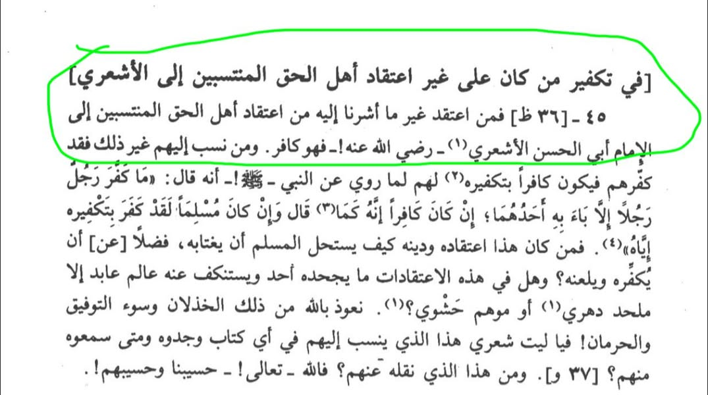

কালামিদের নিকট আমরা সবাই কা-ফে'র
১৮ ডিসেম্বর, ২০২৫
কালামিদের নিকট আমরা সবাই কা-ফে'র।
কালামিদের বিখ্যাত ইমাম আবু ইসহাক সিরাজি (মৃ ৪৭৬ হি.) বলেন—
"যে বা যারা আহলে হক তথা আবুল হাসান আশআরির প্রতি সম্পৃক্তদের আকিদাহ— যা আমরা এখানে উল্লেখ করেছি— তা ব্যতীত অন্যকোনো আকিদাহ পোষণ করে, সে কা-ফে'র"
[শরহে লুমা'-১/১১১]
এখন আমরা যারা কালামি আকিদ পোষণ করি না, আমাদের কী উপায়!
তাদের ইমামদের কিতাবাদিতে এমন তা-ক-ফি-রের ছড়াছড়ি, তবুও দিনশেষে "তা-ক-ফি-রি" ট্যাগ তাইমিদের জন্য বরাদ্দ।
কালামিদের নিকট আমরা সবাই কা-ফে'র।
কালামিদের বিখ্যাত ইমাম আবু ইসহাক সিরাজি (মৃ ৪৭৬ হি.) বলেন—
"যে বা যারা আহলে হক তথা আবুল হাসান আশআরির প্রতি সম্পৃক্তদের আকিদাহ— যা আমরা এখানে উল্লেখ করেছি— তা ব্যতীত অন্যকোনো আকিদাহ পোষণ করে, সে কা-ফে'র"
[শরহে লুমা'-১/১১১]
এখন আমরা যারা কালামি আকিদ পোষণ করি না, আমাদের কী উপায়!
তাদের ইমামদের কিতাবাদিতে এমন তা-ক-ফি-রের ছড়াছড়ি, তবুও দিনশেষে "তা-ক-ফি-রি" ট্যাগ তাইমিদের জন্য বরাদ্দ।
